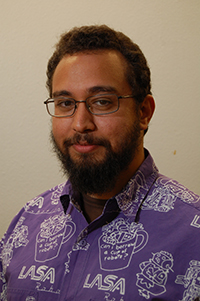

About
Some People Like to compete. I like to Cooperate.
-Riad Nassar
Howdy!
I'm a UX Designer with a Robotics Specialty in beautiful Austin, TX and recent ACC graduate. I love helping people out and making the World a better place for everyone.
I have a Bachelor's in Psychology with a minor in Computer Science from Austin College and an Associate's in User Experience Design from Austin Community College. In 2015, I was a NATURAL programming intern at the office of the Texas Comptroller of Public Accounts where I learned how to program a main frame to process taxes and documents. After that I was a Customer Success Representative at Xerox and then Conduent after they split off. There I triaged with the software engineering team, project managers, business analysts and the clients to resolve issues, answer complex questions and help configure the product to our clients needs.
When I'm not busy designing, I judge robotics competitions in Central Texas.
Core Values

Everyone has guiding principle that they live by called Core Values. I apply my core values to everything I do, so naturally I apply it to my designs.
Others: To Connect, Comfort, and Help Those Around Me
“Sometimes the best way to solve your own problems is to help someone else.”
-Uncle Iroh
My most important one, Others is the value that defines even the other four. I love people and everything I do, I do for others. This goes beyond the simple do know harm. I want a my actions to result in a net positive, so many of my designs are aimed at helping people.
Respect: To Be Fair And Just To All Equally
"A person's a person, no matter how small."
-DR. Seuss
I value respect in a slightly different way than many other people do. To me, respect is about how I treat others. Everyone deserves to be treated fairly and justly. Do something well, you deserve a reward. Make a mistake, and you desrve the chance to fix it. I give others the benefit of the doubt. No matter if you are a small business looking to grow or a group of teenagers looking to learn, I will treat you with respect.
Integrity: To Honor Promises and Never Deceive
"We learned about honesty and integrity - that the truth matters... that you don't take shortcuts or play by your own set of rules... and success doesn't count unless you earn it fair and square."
-Michelle Obama
A promise is sacred to me and I never want anyone to think I am trying to trick them. I work with others, not against them so I want everyone on the same page. Neither I nor others benefit from my deceit and if I say I will do something, I sincerely make the effort to do it. If I am wrong, I will admit it. I would rather have pride in my growth than pride in winning. A client can rest easy knowing that I am being straight forward with them.
Progress: To Make Things Better Than When I Found Them
"Try and leave this world a little better than you found it, and when your turn comes to die, you can die happy in feeling that at any rate, you have not wasted your time but have done your best."
-Robert Baden-Powell
I strive to make things better. Every project I work on, every design I come up has to make things better, even if it's in the tiniest of ways. I try to help the people I meet grow, just a little bit.
Adventure: To Always Seek The Wonder and Novelty Of Even The Most Mundane
"When you see someone putting on his Big Boots, you can be pretty sure that an Adventure is going to happen."
-A.A. Milne
Life's more fun when you're on an adventure, so why not make everything you do one. Work does not have to be bore. I have a shirt with the word "Adventure" on it and love to exclaim "Adventure!" when diving into the unknown.
Recommendations

"Riad's resume will tell you how talented and hard-working he is. What it won't show is that he's a wonderful human being."
-Molly Jones-Lewis, Lecturer at University of Maryland Baltimore County
Read More on LinkedIn"Riad strives to make this world a better place. His thoughtful design solutions coupled with his technological expertise really put him in a class of his own."
-Zohreh Daly, User Experience Designer and Founder of MaMA
Read More on LinkedIn"Riad is a delight to work with. He is eminently capable in all things UX but excels in Interaction Design, Wireframing, Prototyping, and Design Thinking."
-Amanda Long, User Experience Researcher at Charles Schwab
Read More on LinkedInSound like we would get along?
I enjoy meeting new people and would love to get to know you. Just click the button below to connect.
Connect With Me NowPortfolio


Need a UX Designer?
I can elevate products and bring in customers. Just click the button below to get started.
Get Help Now